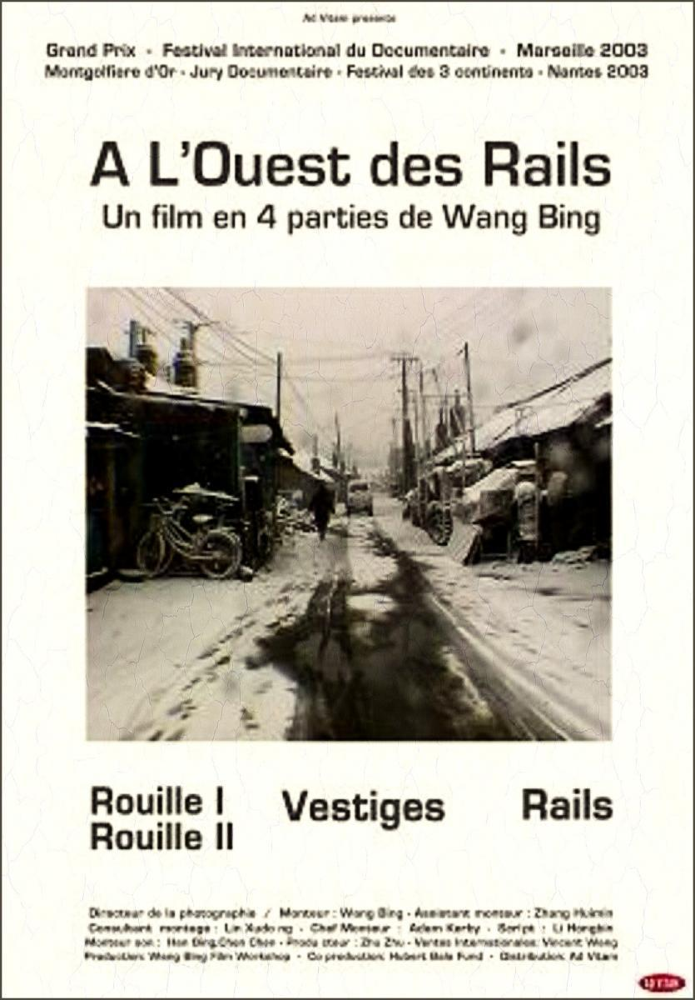

Shenyang to największe miasto w mandżurii, w chińskiej prowincji Liaoning. Shenyang jest głównym ośrodkiem gospodarczym i naukowym północno-wschodnich Chin. W XX wieku dominował przemysł ciężki, później nastąpiła restrukturyzacja. Produkcja środków transportu, rafineryjna, cementowa, włókiennicza, skórzana, papiernicza i spożywcza. Wiele szkół wyższych, filia Chińskiej Akademii Nauk, liczne muzea. W latach 1999-2001 był tam nagrywany mój ulubiony film dokumentalny, "Tie Xi Qu:West of tracks". Przedstawiał on powolny upadek, niegdyś tętniącej życiem, dzielnicy przemysłowej, Tiexi.
Zobacz fragment filmu
| Znani ludzie urodzeni w Shenyang | Atrakcje turystyczne w Shenyang |
| Kōbō Abe – pisarz | pomnik Przewodniczącego Mao Zedonga (dzielnica Heping) |
| Gong Li – aktorka | Pałac Jasności i Spokoju |
| Lang Lang - pianista | Pałac w Shenyangu oraz grobowce Nurhaczego i jego następcy |